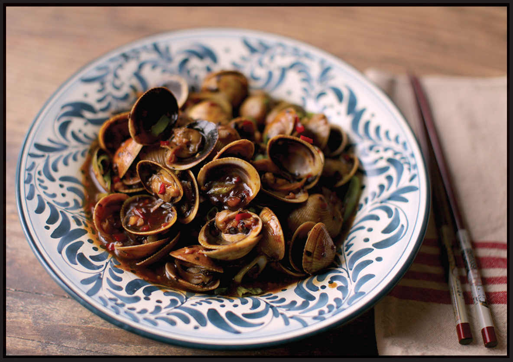

CANTONESE-STYLE CLAMS IN BLACK BEAN SAUCE
|
Yield Serves (see Note) |
Active Time 10 minutes Total Time 15 minutes, plus 30 to 60 minutes for purging the clams |
Depending on size, season, and provenance, clams can vary widely in their ratio of weight to edible meat. Use your judgment or ask the fishmonger when shopping for clams to ensure four full portions. To purge clams, submerge them in a bowl of cold, salty water (about 3 tablespoons Diamond Crystal kosher salt or 2 tablespoons Morton’s kosher salt per liter of water; a 2½ percent brine solution) for half an hour, then drain. Repeat until there is no grit left in the water.
INGREDIENTS
2 tablespoons (30 ml) peanut, rice bran, or other neutral oil
3 teaspoons (7 g) minced garlic (about 3 medium cloves)
2 teaspoons (5 g) minced fresh ginger (about ½-inch segment)
1 small fresh hot chile, such as Thai bird, serrano, or Fresno, minced (optional)
2 tablespoons (about 12 g) dried fermented black beans (douchi), roughly chopped
1 tablespoon (15 ml) Shaoxing wine
1 tablespoon (15 ml) oyster sauce
1 teaspoon (5 ml) dark soy sauce
1 teaspoon (4 g) sugar
1½ to 2½ pounds (680 to 1,100 g) live Littleneck clams, Manila clams, or cockles, purged (see Note)
⅓ cup (80 ml) water
1 scallion, cut on a bias into ½-inch segments
1 tablespoon (9 g) cornstarch mixed with 2 tablespoons (30 ml) cold water
Clams steamed in a garlicky broth is a flavor combination that crosses international boundaries, from Italian linguine alle vongole in bianco to Portuguese porco à alentejana to Cantonese clams in black bean sauce, and a wok is the ideal vessel for steaming clams or mussels. Unlike, say, a Dutch oven with its angled corners that make it hard to stir hard shells, the gently sloped sides of a wok make it simple to move the clams around, letting them tumble in the sauce and cook quickly and evenly.
Clams in black bean sauce is a Cantonese classic that combines the sweet, slightly bitter flavor of clams with a spicy, salty, umami-heavy black bean sauce. When people talk about flavor-packed food, this is the kind of stuff they’re talking about. When we eat clams at home, we encourage our daughter, Alicia, to pluck the plump meat out from inside the shell, then suck on the shell itself, which will inevitably have caught plenty of the rich, glossy sauce.
DIRECTIONS
1Heat the oil in a wok over medium-high heat until shimmering. Add the garlic, ginger, chile, and black beans and stir-fry until fragrant, about 30 seconds. Add the wine, oyster sauce, soy sauce, sugar, clams, and water and stir to combine. Bring to a simmer. Cover and cook, shaking the wok occasionally and adjusting the heat to maintain a steady simmer, until all the clams are open, about 3 minutes.
2Increase the heat to high and stir in the scallion. Stir the cornstarch slurry and add. Cook, tossing, until the sauce thickens enough to coat the back of a spoon. Transfer to a serving platter and serve immediately.
